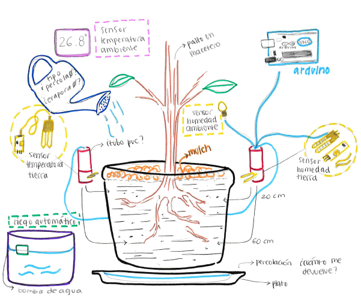
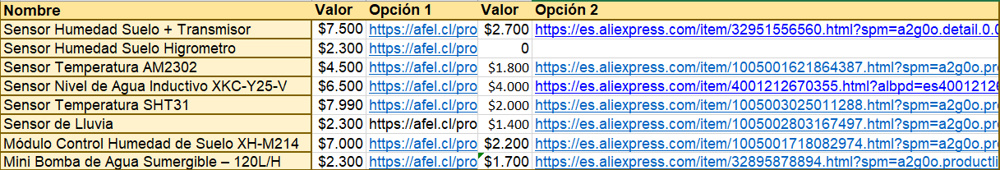

7 - Diseño Experimental
Sketch del sistema

Artefacto: Medir humedad y regar
Función Crítica: Mantener la humedad con la menor agua posible
Evaluar:
-Riego Día/Noche
-Métodos/Formas de Riego
-Altura de Absorción
-Volumen de Agua Percolada (Platito)
-Temperatura int/ext + Variación por Mulch
-Mulch y Grado de Absorción
-Pérdida de Evaporación y Percolación
Metodología
Existen 3 formas en las que el agua sale del sistema, la absorción por parte de la planta, la percolación o drenaje a través de la tierra y la evaporación producida por la temperatura, del mismo modo la planta tiene necesidades específicas de niveles de humedad y temperatura. Nuestra tarea será encontrar un método que nos permita estimar la mejor manera de entregar agua al sistema con el menor nivel de perdida analizando las 3 formas de ocupación hídrica en conjunto.
Nuestra hipótesis es que el método de riego determina la percolación y evaporación, si el riego se compone de volúmenes grandes de agua (Riego corriente) esta se desplazara rápidamente a profundidades donde el palto no puede alcanzarla, del mismo modo si el riego se compone de partículas finas de agua (riego por pulverización) el agua se evaporará con mayor facilidad, teniendo en cuenta estos niveles utilizaremos distintos métodos que buscan entregarnos control sobre las variables que afectan sobre el camino del agua.
Propuesta modelo
Propuesta de estructura para el sensor de humedad y temperatura a distintas alturas, se integra un modulo que se puede apilar para alcanzar mayor profundidad.
Investigación de mercado
